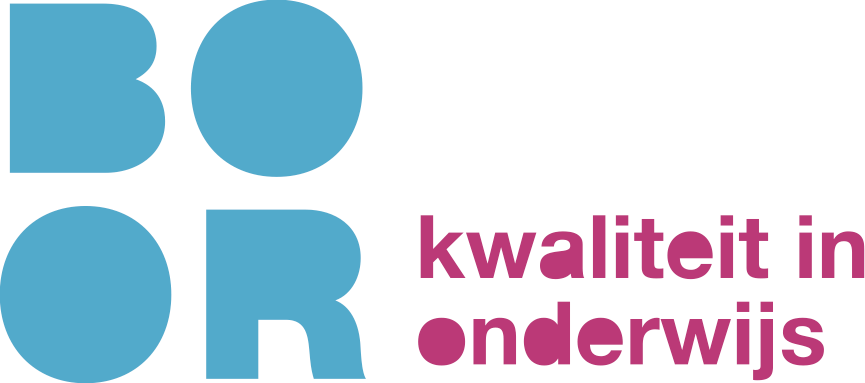

Klik op een blok voor meer informatie of om het aan je schema toe te voegen. Gekozen sessies zijn donkerblauw (✓); sessies die botsen met je keuzes zijn gearceerd.

CongresKlik op een blok voor meer informatie of om het aan je schema toe te voegen. Gekozen sessies zijn donkerblauw (✓); sessies die botsen met je keuzes zijn gearceerd.